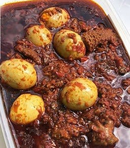

Ofada Stew
>

Ofada Sauce (Ayamase Stew)
Description
This ofada sauce recipe is the red ofada sauce recipe made with red
bell peppers, palm oil, locust beans and other spices.
Ingredients
- 1 small basket of red bell peppers
- 1 small basket of scotch bonnet (Ata rodo) pepper
- 1 small bunch of red chilli pepper (shombo)
- 1 big onion
- 2-3 cooking spoon of palm oil
- 3-4 semi ripe tomatoes
- 1 wrap of locust beans (iru)
- 500g - 1kg of assorted meat
- 6 hard-boiled eggs
- Salt to taste
- 2 seasoning cubes
- ½ cup of ground crayfish
Steps
- Blend your peppers, tomatoes and onions but don’t let it blend smoothly.
- Wash your meats, place in a pot on medium heat with water and season with seasoning cubes, salt and diced onions. Cook till almost tender.
- In a large pot, pour your palm oil and let it bleach(almost, not fully) for about 7 - 15mins then sauté your onions till it’s translucent.
- Add the semi-smooth blended pepper mix and allow to fry for about 5-10 mins, when it’s done and you would know when oil begins to bubble to the top…
- Add your iru, beef stock, assorted meats and water if your stock isn’t enough. Allow to simmer for a couple of minutes then add your already boiled eggs, stir into the stew.
- Take off heat. And serve with Ofada rice
Return to index page